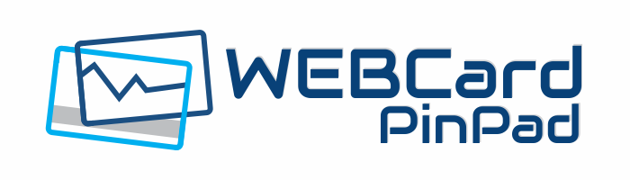

<!--- Content -->
<ion-content>
  <ion-card>
    <ion-card-header>
      <div text-center>
        
      </div>
    </ion-card-header>
    <ion-card-content padding-top>
      <div text-center>
          <h1 class="title">Bem vindo ao PinPad-WEBCard</h1>
          <p text-center>Esse app funciona como um PinPad para o sistema WEBCard.</p>
      </div>
      <div class="barButton">
        <div *ngFor="let page of pages">
          <button ion-button block padding-vertical margin-top [color]="page.color" (click)="openPage(page)">
              <div>{{page.title}}</div>
          </button>
        </div>
      </div>
    </ion-card-content>
  </ion-card>
</ion-content>  
<ion-footer text-center style="background-color: #eee;">
  <p text-center>Desenvolvido por <a href="http://hiperagil.com.br">Hiperagil Tecnologia</a></p>
</ion-footer>